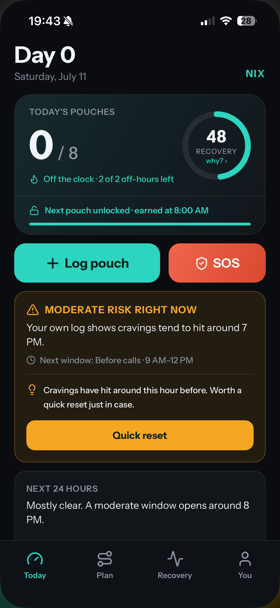

For Zyn · Velo · On! · Rogue
Quit Zyn without losing your edge.
NIX replaces willpower and shame with a personalized taper plan, an hour-by-hour roadmap through withdrawal, and real-time craving support — built for people who can't afford to slow down.
No lectures. No shame. Just a protocol that works.
The urge peaks at 90 seconds, then it falls.
Talk to coachThe Protocol
A plan built from your habit,
not a pamphlet.
Eight quick questions become a day-by-day taper schedule and an hour-by-hour map of your first 72 hours. You always know your next move.
Your taper, charted
Cold turkey is a cliff. NIX is a controlled descent — your daily pouch allowance steps down on a schedule your brain can actually keep up with.
The 72-hour roadmap
Withdrawal isn't a mystery — it's a schedule. NIX tells you what each stretch will feel like and exactly what to do in it.
-
Hr 0–6
The itch
Mild pull. Log it, don't fight it — your allowance still covers you.
-
Hr 6–24
The fog
Focus dips. Performance Mode front-loads your remaining pouches around deep work.
-
Hr 24–48
The peak
Cravings crest here. SOS is one tap away — most waves break inside five minutes.
-
Hr 48–72
The turn
Receptors begin resetting. Sleep improves. The hard part is measurably behind you.
Craving SOS
The worst five minutes,
never faced alone.
One tap opens a guided breathing ring or an "urge surf" exercise that rides the craving until it breaks. Need words instead? Chat live with an AI coach that already knows your triggers, your taper, and your history.
- Haptic-synced breathing ring for acute cravings
- Urge-surfing visual — watch the wave crest and break
- AI coach with full context: your triggers, risk hours, and plan
- Streak momentum
- Taper adherence
- Craving response
- Slip recovery
Yesterday's slip: −4 points, not a reset.
Recovery Score
A slip is data.
Not a verdict.
Most quit apps reset your streak to zero the moment you slip — and that's exactly when people give up. NIX scores your progress across four factors. A bad hour dents your score; it never erases your work.
- Four-factor score, not a fragile streak counter
- Slips cost points, never your progress
- The taper plan adapts to a bad week instead of forcing a restart
Performance Mode
Your output is protected.
The real fear isn't the craving — it's shipping worse work while you quit. Performance Mode front-loads your remaining daily allowance around your protected work hours, so your edge stays intact when it matters most.
- Front-loads your daily allowance around protected work hours
- Pouches are earned unlocks on a schedule — "next pouch at 8:00 AM," not a guilt trip
- Risk windows forecast from your own log and flagged before they hit
NIX schedules your taper around your calendar — not the other way around.

And the long game
Precision from minute 20
to month 12.
Recovery & Health Timeline
No vague "it gets better." A concrete milestone map — from your heart rate settling at 20 minutes through month 12 — with a "you are here" marker the whole way.
- 20 minHeart rate & blood pressure settle
- 24 hrsNicotine mostly cleared
- 48 hrsYou are here — receptors downregulating
- 2–3 moThe PAWS window most apps skip
- 12 mo20 milestones, mapped end to end
Weekly AI Pattern Insights
NIX reads your own logs — sleep, triggers, risk hours — and writes you a plain-English weekly report with one concrete thing to try next.
"Your slips cluster between 3–5 PM after short sleep. This week: move your afternoon allowance 30 minutes earlier and take the 3 PM walk we tested."
— Your Week 2 reportMoney & Pouches Back
A live-updating count of exactly what you're getting back, starting the day you start.
Typical 90-day figures for a 1-can-a-day habit.
Why NIX
Not a re-skinned
quit-smoking app.
Built for pouches
No lung metaphors, no vaping language. Every screen is built around oral nicotine — the habit you actually have.
Performance-first
"Keep your edge" framing, not health-scare framing. NIX assumes you're quitting while performing, not instead of it.
A plan that bends
Bad week? The taper adapts instead of breaking. Slips cost partial points, never a reset to day zero.
Private by design
No accounts. No user database. Your quit history is encrypted on your device — and when you use the coach, your messages go out with no name or identity attached, and nothing is kept afterwards.
Straight answers
You're skeptical.
That's the right instinct.
Why not just quit cold turkey for free?
You can — most people have tried, and most cold-turkey attempts fail because there's no structure for hour 30, when it gets hard. NIX gives you a taper your brain can keep up with and an hour-by-hour roadmap, so you always know the next move instead of negotiating with yourself.
Will quitting wreck my focus at work?
That fear is exactly what Performance Mode is built for. It front-loads your remaining allowance around your protected work hours, so withdrawal fog lands in the hours that matter least — not during your 10 AM deep-work block.
It's not free. Why pay to quit?
A year of NIX costs less than a single month of pouches for a typical habit, and it tracks exactly how much money you get back from day one. Most users see the app pay for itself inside the first two weeks — in cash, not vibes.
What happens when I slip?
You log it, your Recovery Score dips a few points, and the plan adjusts. No reset, no lecture, no red screen of shame. A slip is one data point in a working protocol — and the data says people who don't spiral after a slip are the ones who actually quit.
Where does my data go?
Your logs, triggers and history stay on your device, encrypted, and there is no account or user database anywhere. The one exception is the AI coach: to answer you, it sends your message and quit context to our server and on to OpenAI. No name, email or identity is attached — we don't have those — and nothing is stored afterwards. Everything else never leaves your phone. The Privacy Policy spells out exactly what goes where.
Quit Zyn. Keep your edge.
NIX is launching on iOS soon. Leave your email and you'll be first in — the hardest 72 hours of your quit are already mapped.
iOS first · One email at launch, nothing else · No account required